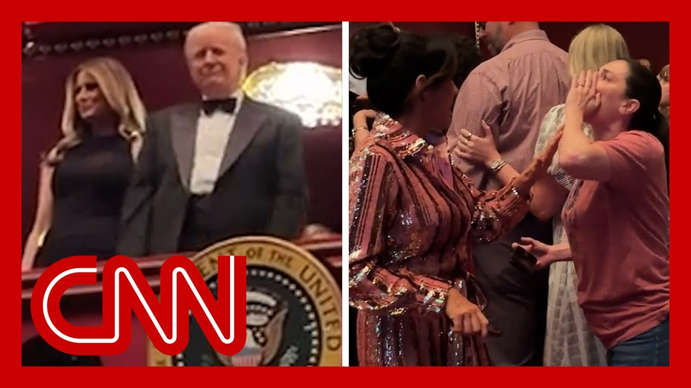

【看看人群在肯尼迪中心对特朗普的反应】
Summary: Donald Trump was greeted with mixed reactions at the Kennedy Center during a Les Misérables performance, where he attended a fundraiser and discussed his conservative takeover of the venue.
摘要： 特朗普在肯尼迪中心观看《悲惨世界》演出时受到褒贬不一的反应，他此行是为筹款活动，并谈及对该文化机构的保守派接管。

⏱️ Estimated Reading Time: 11 min
📚 六级生词 📚 雅思生词 📚 托福生词 📚 专八生词 📚 SAT生词 📚 考研生词 📚 GRE生词 📚 高考生词
Donald Trump was greeted with cheers and boos as he attended a performance of Les Miserables at the Kennedy Center in Washington.
特朗普在华盛顿肯尼迪中心观看《悲惨世界》演出时，受到欢呼和嘘声的迎接。
it was just a few months ago that the president launched a conservative takeover of the performing arts facility, calling it too liberal.
就在几个月前，这位总统对该表演艺术机构发起保守派接管，称其过于自由化。
His appearance was part of a fundraiser for the center.
他的出席是为该中心筹款活动的一部分。
Trump said donors had raised $10 million before the show.
特朗普表示， donors在演出前已筹集1000万美元。
President Trump said he's a big fan of Les Mis.
特朗普总统称他是《悲惨世界》的忠实粉丝。
Ironically, while protesters are in the streets of some U.S. cities, the legendary musical tells the story of French citizens rising up against their government.
讽刺的是，当美国一些城市的抗议者走上街头时，这部传奇音乐剧讲述的正是法国公民反抗政府的故事。
He told Fox News Digital he loves the songs and the musical question.
他向福克斯数字新闻表示，他喜爱其中的歌曲和音乐剧主题。
Holmes has more on his night at the Kennedy Center.
霍姆斯详细报道了他在肯尼迪中心的夜晚。
President Donald Trump going to see a performance of LA mayors at the Kennedy Center on Wednesday.
特朗普总统周三在肯尼迪中心观看了一场洛杉矶市长们的演出。
This is the first time he's seen a performance at the cultural center since he effectively took it over.
这是他实际接管该文化中心后首次在此观看演出。
He got rid of most of the board members, replaced them with Trump loyalists, who then in turn voted him to be the president of the board.
他撤换了大部分董事会成员，代之以特朗普的忠诚支持者，后者随后投票让他担任董事会主席。
Now, he's been pretty fixated on the Kennedy Center for some time.
一段时间以来，他一直对肯尼迪中心颇为执着。
We know he's visited there.
我们知道他曾到访那里。
He has tried to talk about rebuilding it.
他曾试图讨论重建事宜。
We know he's tried to put $250 million into that spending bill that's currently in front of the Senate.
我们得知他试图在目前提交参议院的支出法案中为该中心争取2.5亿美元资金。
Now, tonight was billed as partly a fundraiser.
今晚的活动部分定位为筹款晚会。
There were tickets for $2 million, $1 million, $100,000.
门票价格分为200万美元、100万美元和10万美元三档。
We heard from the head of the Kennedy Center, Rick Grenell, who said that they believed that they had raised around $10 million.
肯尼迪中心负责人里克·格伦内尔表示，他们认为已筹集约1000万美元。
Now for $2 million.
其中200万美元档位的门票，
We reported earlier, you could essentially get a seat in the box next to the president.
据我们早前报道，购买者可获得总统包厢邻座的席位。
We also know that a lot of members of the administration and supporters were buying some of those tickets.
我们还了解到，许多政府成员和支持者购买了部分高价门票。
Now, there had been some concern because last month, CNN reported that several members of the cast of names were planning on boycotting the president's performance.
此前存在一些担忧，因为CNN上月报道称，数名演员计划抵制总统出席的演出。
The director, Grenell, was asked about that as well.
格伦内尔导演也被问及此事。
He said that was a long time ago, and there has been a lot of pushback to Donald Trump's takeover of the cultural center, which has been really an iconic piece of Washington, D.C., for decades.
他表示那已是过去的事，并承认对特朗普接管这家数十年来作为华盛顿特区标志性文化机构的做法存在大量反对声音。
Kristen Holmes, CNN, The White House one woman screamed, convicted felon and rapists before security escorted her out.
CNN白宫记者克里斯滕·霍姆斯报道，一名女性高喊"重罪犯和强奸犯"，随后被安保人员带离。
The president said he was unbothered by reports that some cast members planned to boycott the boycott the performance due to his appearance.
总统表示，对于有演员因其出席而计划抵制演出的报道，他并不在意。
Joining me now, Kamal Bell, filmmaker, comedian, you wrote a whole Substack, as I remember in talking to you of why you performed at the Kennedy Center after Trump took over.
现在连线电影制作人兼喜剧演员卡迈勒·贝尔，我记得你曾在Substack撰文谈论为何在特朗普接管后仍在肯尼迪中心演出。
you said to boycott or to show up.
你提出"抵制还是出席"的问题。
That is the question.
这正是问题所在。
And in your case, though, this all happened days before you performed, I'm curious what you think about what happened this day when people responded to the president showing up there.
就你的情况而言，这些都在你演出前几天发生，我很好奇你对今日民众对总统到访反应的看法。
Well, I'm happy to say I had a better night at the Kennedy Center than Donald Trump did.
我很高兴地说，我在肯尼迪中心的夜晚比特朗普更愉快。
Who ever think that I would have a better night at a at the Kennedy Center than the president?
谁能想到我在肯尼迪中心的夜晚会胜过总统呢？
I think people don't understand that the Kennedy Center is not we think of it as some sort of presidential, regal place.
我认为人们误解了肯尼迪中心——我们总将其视为某种总统级的皇家场所。
It is really just the most well-funded community center in the country, and it is there for the community.
它实际上只是全国资金最充裕的社区中心，是为社区服务的。
It's not really there for the president.
它并非为总统而设。
It serves the community of D.C., which is a bright blue Democratic dot in the middle of what, in the middle of our government and so it is not really the president's home.
它服务的是华盛顿特区社区——这个深蓝民主党据点位于政府中心地带，因此并非总统的主场。
It is the people in D.C..
它属于华盛顿特区的人民。
So, you know, there have been a lot of people talking about boycotting, and in this particular case, you have people refusing to perform at the Kennedy Center because, the unusual step that the president took of taking over, the center, with the board is etc..
你知道，已有许多人讨论抵制，在此特殊情况下，有人因总统通过董事会接管中心等非常规举措而拒绝在肯尼迪中心演出。
would you still perform at the Kennedy Center?
你仍会在肯尼迪中心演出吗？
I mean, have you asked yourself and answer the question as to whether or not you would boycott or take place, take part?
你是否自问并回答了关于抵制还是参与的问题？
I would prefer the Kennedy Center, if they 100% told me that Trump was going to be there, I would definitely be there on that night.
我更倾向肯尼迪中心——如果他们明确告知特朗普将出席，我必定会当晚到场。
Any other regular night in D.C., I would probably find a different venue, but I do think I was lucky enough over the weekend to, to speak at Nikki.
在华盛顿特区的其他普通夜晚，我可能会选择其他场地，但上周末我很荣幸能在尼基·乔万尼的弗吉尼亚理工追悼会上发言。
Giovanni's a memorial service in Virginia Tech, and Sweet Honey in the Rock was there, and sweetheart and the Rock famously showed up in North Carolina to, to to to sort of perform with the people there during the anti-trans bathroom bills.
"甜蜜蜂蜜摇滚"组合也出席了，该组合曾著名地在北卡罗来纳州反跨性别浴室法案期间与当地民众同台演出。
And a lot of performers canceled Springsteen, other people, and they said, we showed up for our people.
许多表演者如斯普林斯汀等人取消了演出，而他们表示："我们是为我们的人民而来。"
And I talked to the founder of Shoot Honey in the Rock that night.
当晚我与"甜蜜蜂蜜摇滚"创始人交谈。
She said, you have to do what makes sense for you.
她说："你必须做对自己有意义的事。"
And so I feel like for me, as a state of freedom, I can speak truth directly to power.
因此我认为，作为自由之身，我可直接向权力说真话。
If you're in line, Miz, you kind of got to stick to the script.
若你是《悲惨世界》演员，就必须遵循剧本。
Are you going to get fired?
否则可能被解雇。
But as a comedian, I am standing firmly on the First Amendment and I hold tight to it.
但作为喜剧演员，我坚定捍卫第一修正案并恪守不渝。
Every day.
每一天皆如此。
You're doing a comedy show because you are a comedian and funny as hell.
你举办喜剧演出是因为你是个极其风趣的喜剧演员。
Frankly.
坦白说。
your show is called who's With Me?
你的节目名为《谁支持我？》
but there is a purpose behind this because it is helping support local arts organizations.
但这背后有其目的——它正助力支持当地艺术组织。
Tell me about that.
请谈谈这点。
Yeah.
是的。
So, the NEA, through Trump's directive, cut arts funding around the country of giant big places like the Berkeley Rep, which is our main repertory theater out here in the Bay area, but also small black and brown live theaters that really rely on the few thousand dollars they get from the NEA.
特朗普指示下的国家艺术基金会削减了全国艺术经费，影响范围包括伯克利话剧院这类湾区主要剧目剧场，也包括真正依赖NEA数千美元拨款的小型黑人及棕色人种现场剧院。
And so next week at the Berkeley Rep, June 17th through 22nd, I am doing a series of shows there, even though I was just there to try to help cover the gap.
因此下周6月17日至22日，我将在伯克利话剧院进行系列演出，尽管我刚去过那里试图填补资金缺口。
And so the Berkeley rep, I reached out to them and said, is there anything I can do?
我联系伯克利话剧院询问："我能做些什么？"
I can't write $1 billion check.
我无法开出10亿美元支票。
Not all celebrities are equally rich, but I can show up and again, donate my voice and get my voice to the cause of the arts.
并非所有名人都同等富有，但我可以到场并再次为艺术事业贡献我的声音。
Because we both know, sir, I don't get a job at CNN because I'm a good journalist.
因为我们都清楚，先生，我能在CNN工作并非因为我是优秀记者。
I get a job at CNN because of my because of the arts.
我能在CNN工作是因为艺术。
Because you're funny and because of the art and because what you just kind of a cool guy.
因为你风趣幽默，因为艺术，因为你本身就是个很酷的人。
I mean, I'm just going to say it.
我直说吧。
I know you're not a billionaire, but I like you anyway.
我知道你不是亿万富翁，但我依然喜欢你。
No, I'm I'm consider myself the people's chairman of the Kennedy Center, the people secretary of education and the people's chair of the NEA.
不，我自视为肯尼迪中心的人民主席、教育部人民部长及NEA的人民主席。
I got I got to do all these things.
我肩负所有这些职责。
Got a lot of titles to do correctly that that's a lot of work.
要正确履行这么多头衔需付出大量努力。
Thank you.
谢谢你。
My kids.
我的孩子们。
I got to have a lot of jobs.
我必须从事许多工作。
and I know your mother would be very proud.
我知道你母亲会非常自豪。
Campbell.
坎贝尔。
It is always a pleasure.
总是很愉快。
Thank you so much.
非常感谢。